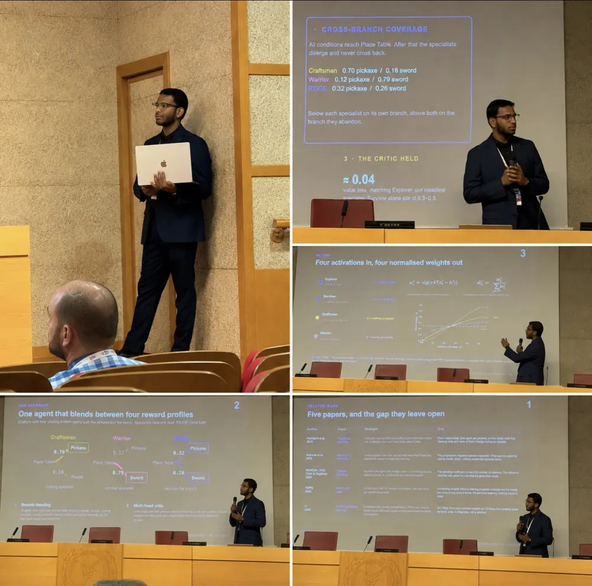
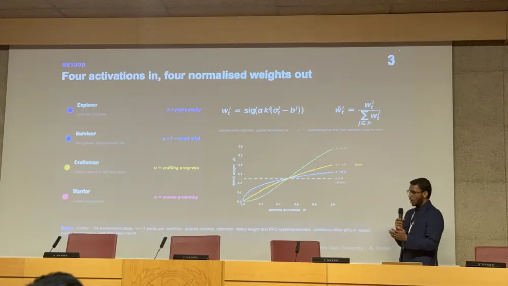
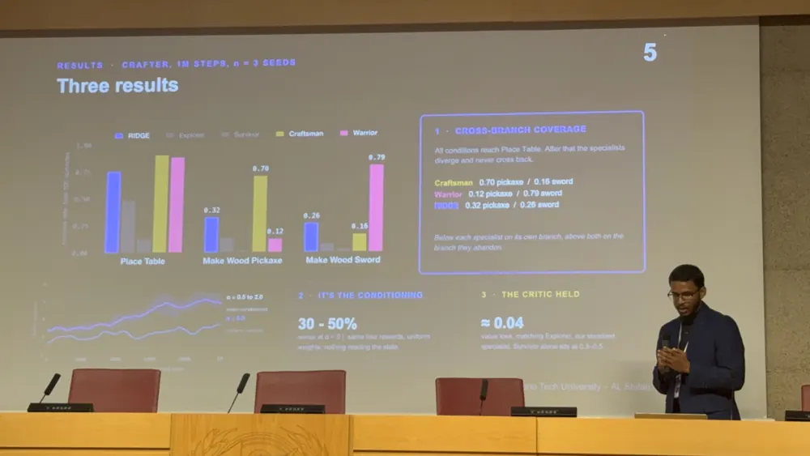
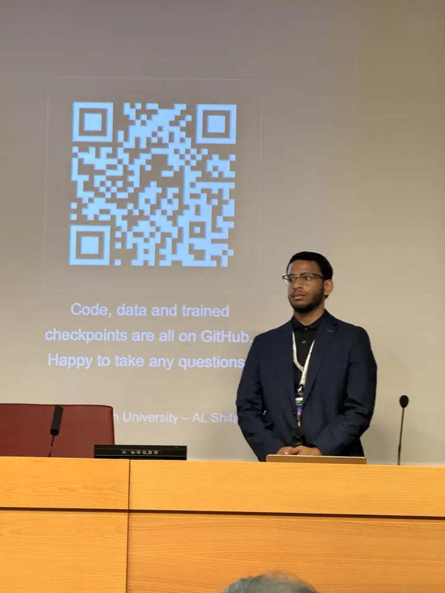

論文 / 001
Presented · IEEE CoG 2026 · Madrid
RIDGE: State-Conditioned Reward Blending for Behavioral Coverage in Deep RL Game Agents
One PPO agent blends four persona rewards: Explorer, Survivor, Craftsman, and Warrior. The game state sets the blend. The agent changes its play style in one episode. This removes the need to train one agent for each persona. A multi-head critic keeps each value function stable while the blend changes. RIDGE is the only condition that reaches both wood-tier crafting branches on Crafter.



